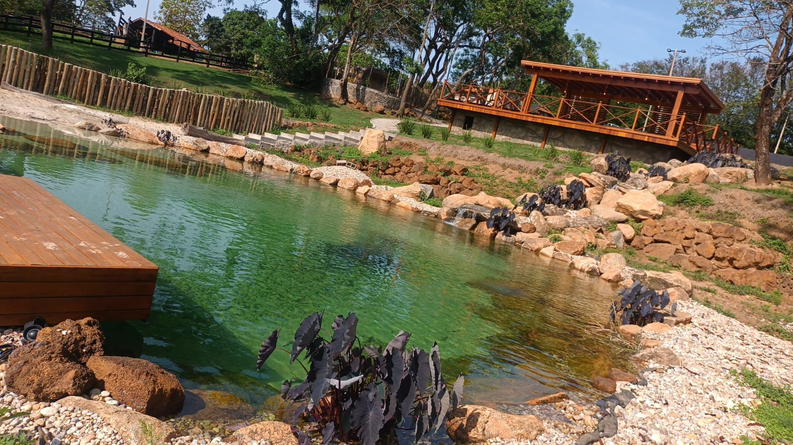
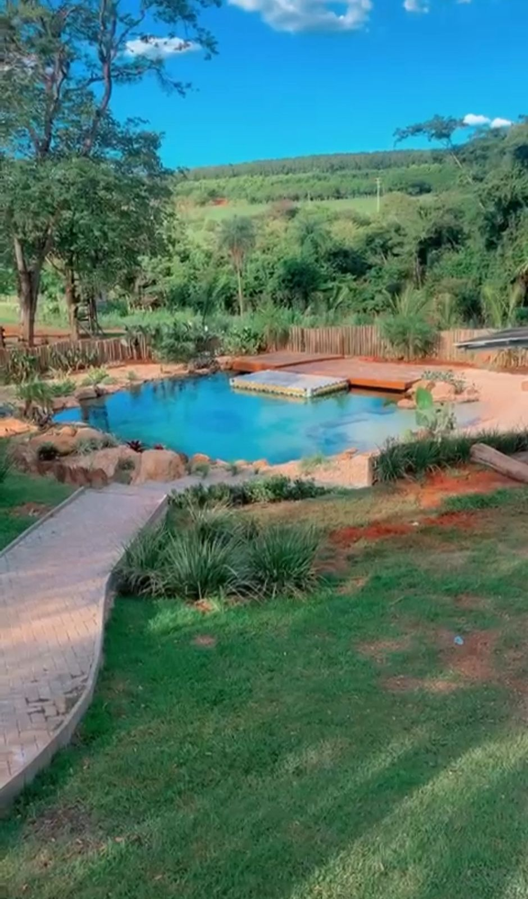
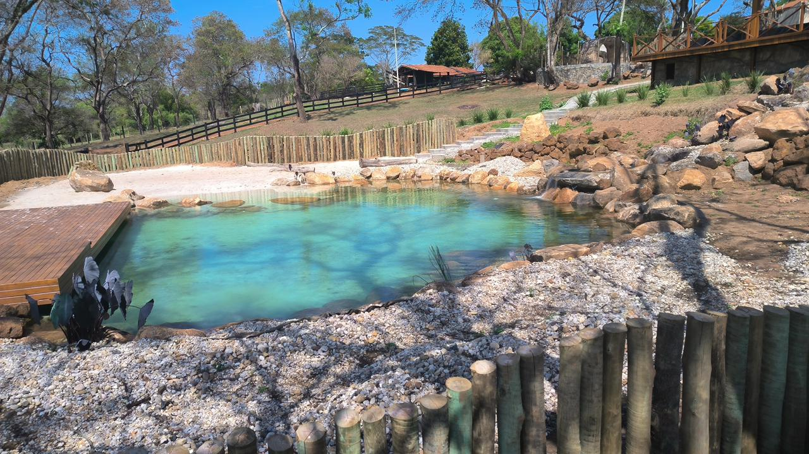
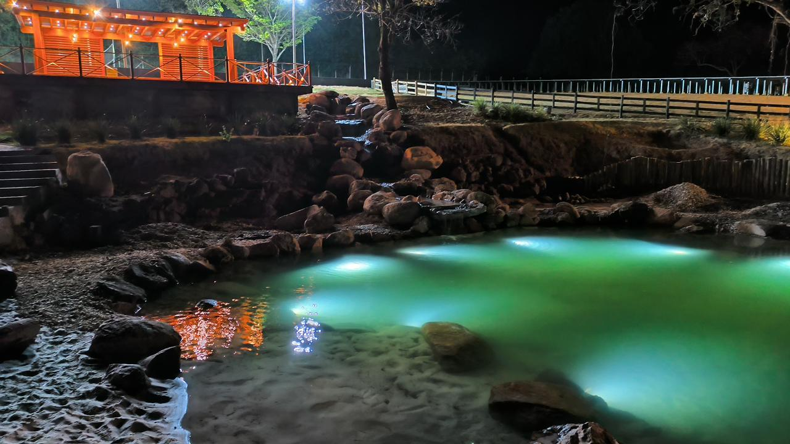
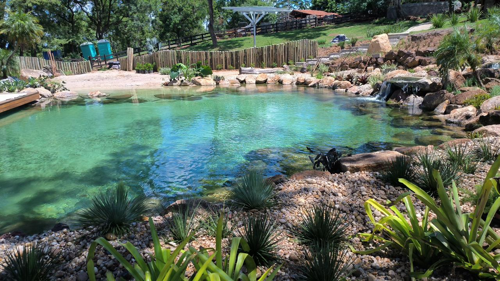
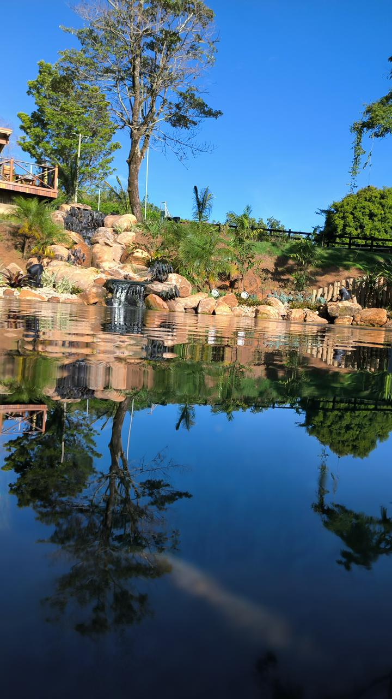

Piscinas Naturais
Galeria






Piscinas Naturais
As piscinas naturais proporcionam um ambiente de relaxamento profundo e conexão verdadeira com a natureza. Construídas com rochas naturais ou artificiais, elementos orgânicos e um design cuidadosamente planejado, oferecem beleza excepcional e uma sensação de tranquilidade incomparável. Podem incluir plantas aquáticas, áreas de paisagismo e acabamentos escolhidos conforme a preferência do cliente, criando um espaço visualmente deslumbrante, harmonioso e totalmente integrado ao ambiente. O resultado é uma piscina que une estética, bem-estar e elegância natural.